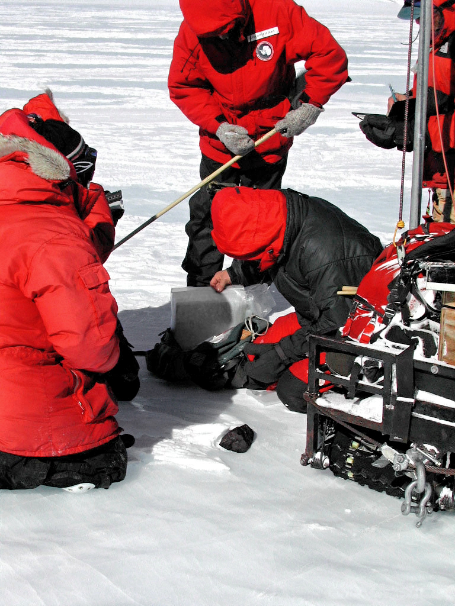
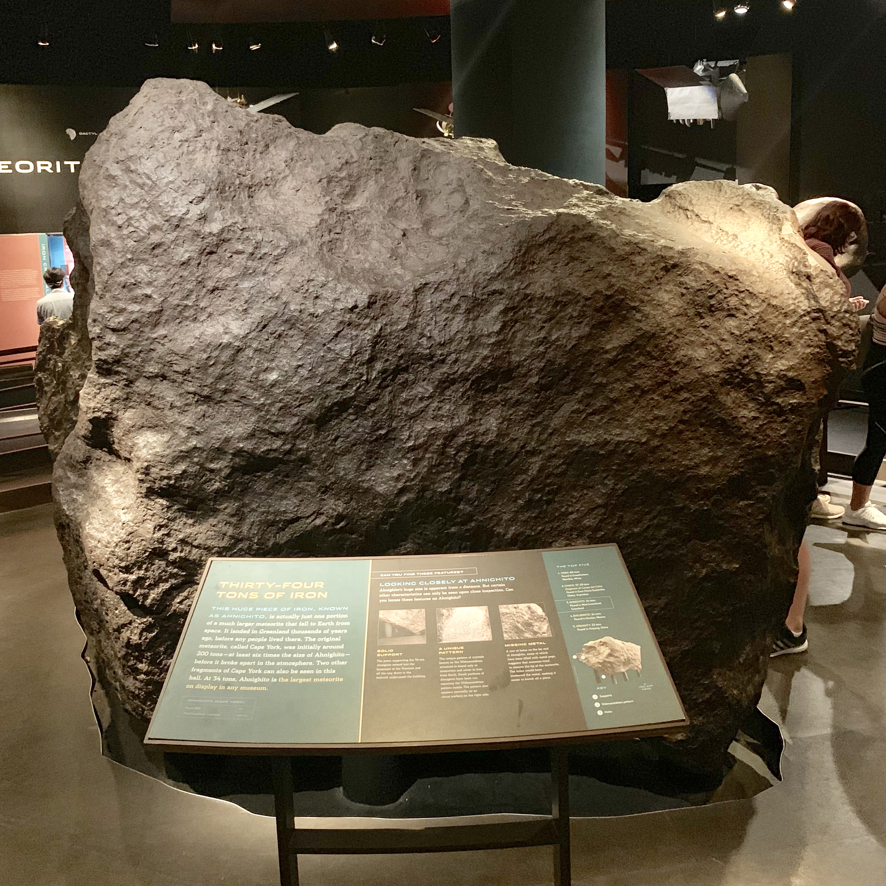
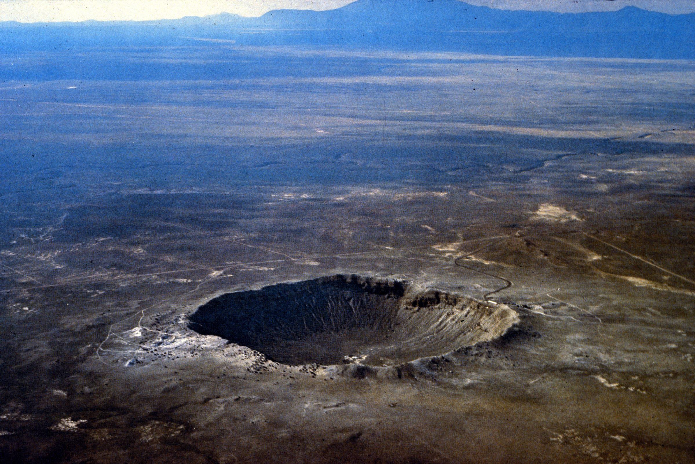

Almost nobody sees one fall
The Meteoritical Society catalogues 45,716 named meteorites. Only 1,107 of them — 2.42% — were ever observed during the fall itself. The rest are Finds: rocks recognised on the ground at some unknown later date, sometimes thousands of years after they landed.
The witnessing rate is roughly six observed falls per year worldwide, and it has been roughly six per year for as long as anyone has been counting. The Earth gets hit by an estimated 1,800 land-falls every year. So the chance that any given fall enters the catalogue as a witnessed event is well under one percent.
Everything else this blog covers is a consequence of that gap.
The Find explosion of 1969
The cleanest way to see the catalogue's shape is to split it at 1970. Before 1970, the dataset records 1,431 Finds. After 1970, it records 42,886 — a thirty-fold jump that is the single biggest pattern in the data.
Decade-by-decade counts make the timing impossible to miss. Through the 1960s, Finds tick along at a few hundred per decade. In the 1970s the number jumps to 4,909. In the 1990s it crosses ten thousand. In the 2000s alone, more meteorites enter the catalogue (17,698) than in the entire previous century combined.
Nothing changed in the sky in 1969. What changed is that the first systematic Antarctic search began. Japanese and then American teams started driving snowmobiles across blue-ice fields where katabatic winds had spent millennia scouring meteorites back to the surface. ANSMET alone has now recovered more than 23,000 specimens — more than half of every meteorite humans have ever named.

A map of where humans looked
Among the 38,400 catalogue rows with coordinates, 22,099 — 59.2% — are below latitude -60. All 22,099 are Finds. The Antarctic ice contributes more than half of every geocoded meteorite humans have ever recovered, and zero observed falls.
Strip Antarctica away and the remaining geography is itself almost all desert. The Arabian peninsula and Oman supply 3,154 rocks; the Sahara and Sahel 2,414; the US southwest 1,063; the Australian outback 540; the Atacama 415. The single hottest five-degree cell outside Antarctica is the corner of West Africa where longitude zero crosses the Sahara, with more than six thousand entries.
The pattern is not that meteorites prefer cold or dry land. It is that on cold or dry land they stand out, and on cold or dry land humans now go looking.
Ten orders of magnitude, log-normal
Meteorite masses span more than ten orders of magnitude — from sub-gram chips to the sixty-tonne Hoba. The median rock weighs 32.7 grams (about a tomato). The arithmetic mean is 13.3 kilograms (a cinder block), four hundred times larger than the median. That ratio is the canonical signature of a heavy-tailed distribution: a small number of giants and an army of pebbles.
The asymmetry shows up sharply across the Fell-vs-Found split. Median Fell mass is 2,800 grams; median Found mass is 30.5 grams. A typical witnessed meteorite is ninety-two times heavier than a typical recovered one. That makes physical sense: the only meteorites loud and bright enough to be seen mid-fall are the big ones. Antarctic and desert searches, by contrast, pick up gram-scale chips an eyewitness would never even notice.
The top 20 are a wall of iron
Sort the catalogue by mass and the top twenty rows are a wall of iron. Hoba (60 tonnes, Namibia), Cape York (58 tonnes, Greenland), Campo del Cielo (50 tonnes, Argentina), Canyon Diablo (30 tonnes, Arizona, the body that punched out Meteor Crater), Armanty (28 tonnes, Xinjiang). Every one is an iron meteorite. The first stony rock to appear — the Jilin H5 chondrite that fell on China in 1976 — does not show up until rank nineteen.
Widen the window to the top hundred and the bias holds: seventy-two of the heaviest hundred meteorites in the catalogue are irons, ten are stony-irons, only fifteen are ordinary chondrites. Yet irons are barely 2.3% of the catalogue by count. The heaviest meteorites on Earth are not a sample of what falls; they are a sample of what survives. Iron blocks shrug off atmospheric ablation and weather slowly enough that a 60-tonne lump can sit in a Namibian field for eighty thousand years and still be there to plough into.
Some of these rocks were the centre of their own stories long before the Meteoritical Society named them. The Inughuit of Greenland cold-forged iron tools from the Cape York fragments for centuries before Robert Peary sledged the largest three off the ice in the 1890s and sold the biggest one to the American Museum of Natural History for forty thousand dollars. Hoba was discovered in 1920 by a Namibian farmer ploughing a field; it was declared a national monument before anyone tried to move it.

Counts say chondrite, mass says iron
By row count, the catalogue is dominated by one composition family. Ordinary chondrites — H, L, and LL groups with petrologic types 3 through 6 — make up 86.96% of all entries (39,756 of 45,716). Carbonaceous chondrites are a distant second at 3.50%, followed by the HED achondrites at 2.59% and iron meteorites at 2.34%. The dataset's own breakdown matches the literature's "87% ordinary chondrite" benchmark almost to the decimal.
Now flip the lens to mass per row. Iron meteorites carry a median mass of 10,000 grams — ten kilograms. Ordinary chondrites' median is 28.5 grams. The typical iron is three hundred and fifty times heavier than the typical chondrite. So irons are 1 in 43 rows by count, but they dominate the heavy tail. The same flip explains why an analysis based on the top of the chart and an analysis based on row counts produce two completely different pictures of "what a meteorite is."
Witness rates by family expose a quieter selection effect. Iron meteorites and HED achondrites are observed falling at 4.6% and 5.1% respectively — roughly double the catalogue's overall 2.4% rate. Ordinary chondrites sit at the mean (2.1%). Lunar achondrites are 0.0%: none of the 165 lunar meteorites in the catalogue has ever been seen falling. Every one of them was recovered from Antarctic ice or hot-desert pavement, identified later in a lab.
The catalogue is a record of where we looked
Decade-by-decade, the Antarctic share of the catalogue has its own history. In the 1970s and 1980s, blue-ice teams supplied 89-94% of every dated geocoded rock. In the 1990s, hot-desert programs in the Sahara and Arabia caught up; by the 2000s, Antarctica's share had dropped to 39% even as the absolute count kept rising. The frozen 2010s tail of the dataset shows the deserts now leading.
Lay all three numbers next to each other — 2.4% witnessed, 59% Antarctic, 97% post-1969 — and the meteorite catalogue stops looking like an inventory of what hits Earth and starts looking like an inventory of where and when humans looked for what hit Earth a long time ago. Witnessed falls are the only rows that approximate a random sample of what is really up there, and there are barely a thousand of them spread across twelve hundred years.
Whatever the next forty thousand entries look like, the controlling variable will be the same: which search programs run, where, and for how long.

References & data
- Data source. Meteoritical Bulletin Database, maintained by the Meteoritical Society's Nomenclature Committee — lpi.usra.edu/meteor. The snapshot used here is the NASA Open Data Portal mirror, surfaced via Data Is Plural (2020-07-29). Public-domain release.
- Antarctic recovery context. ANSMET — Case Western Reserve University FAQs; ANSMET on Wikipedia.
- Fall-rate benchmark. Meteorite fall statistics — Wikipedia: ~1,800 land-falls/year, ~7.9 observed-fall reports/year (2007-2018), >10/year since 2020.
- Composition reference. Ordinary chondrite — Wikipedia; Glossary of meteoritics.
- Named-meteorite background. Hoba: Wikipedia; Cape York: Wikipedia; Campo del Cielo: Wikipedia; Canyon Diablo / Meteor Crater: Wikipedia; Armanty / Aletai: Wikipedia.
- Reference photos. Hoba (CC BY 2.0, Eugen Zibiso); Ahnighito (CC BY 2.0, Mike Cassano); Canyon Diablo fragment, El Chaco fragment, ALH81005 lunar meteorite — Wikimedia Commons; Antarctic recovery photo & Meteor Crater aerial — public domain (NASA / USGS).
- Built with. Vega-Lite 5, Leaflet 1.9, Web Audio API, vanilla JS. Charts and stats traced via
data-edt/data-ana/data-des/data-detattributes.